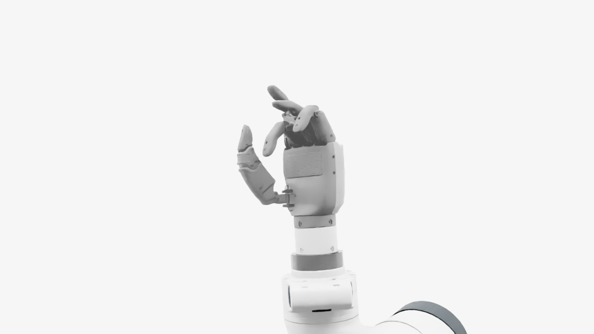
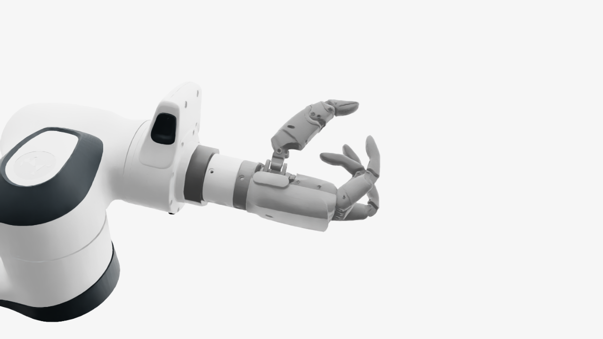
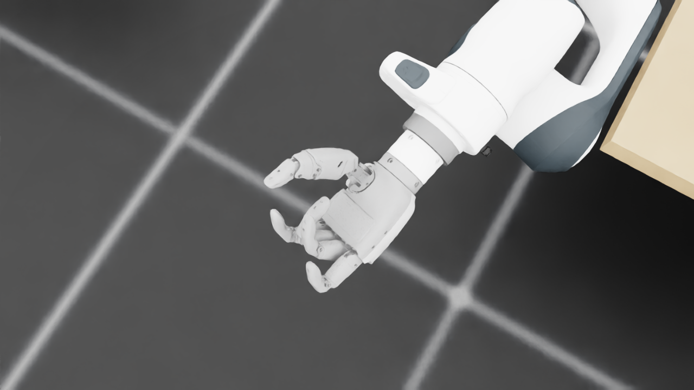
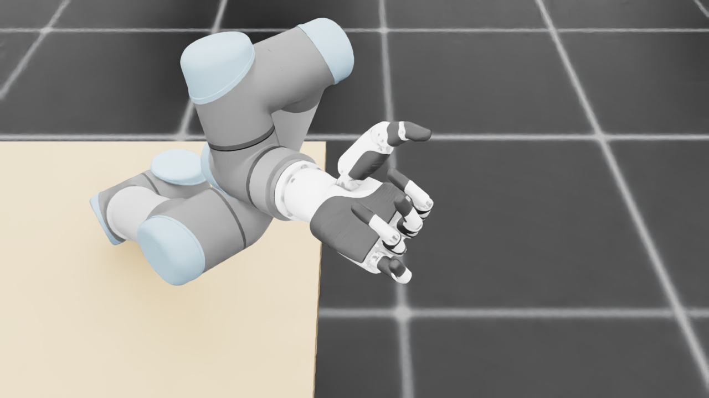
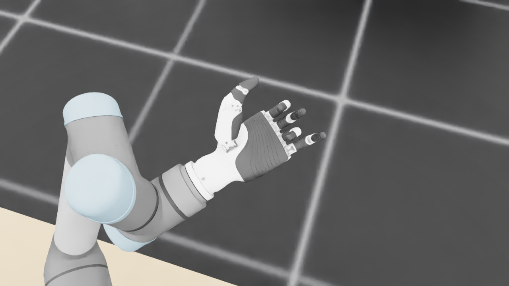
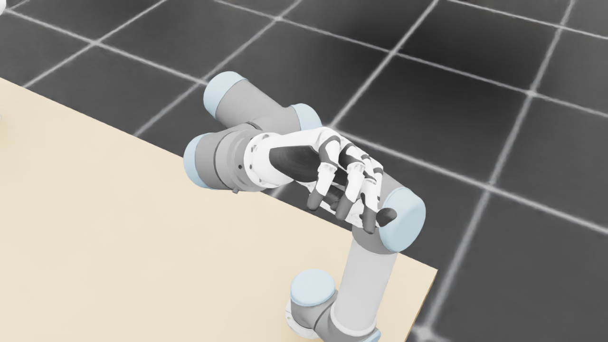
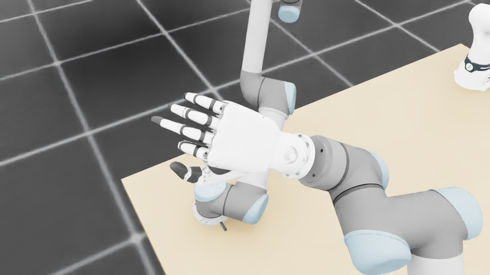
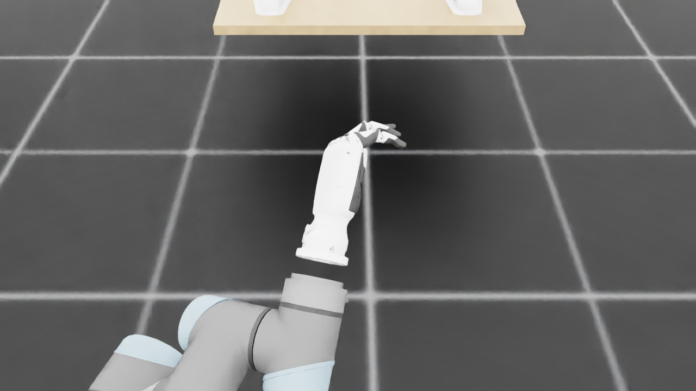
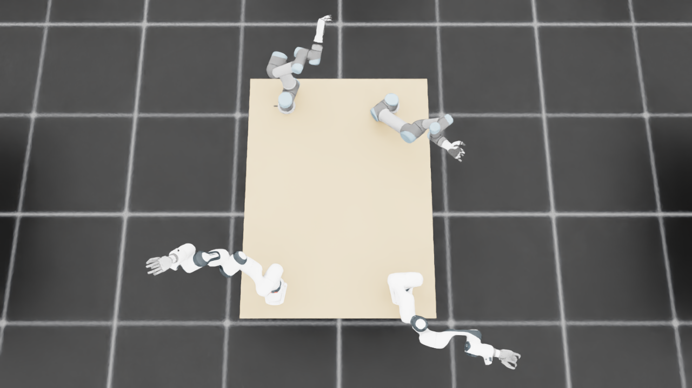

规定初始像素覆盖已通过独立数据验收，完整12步与物理安全未通过。Prescribed initial pixel coverage passes the independent DATA audit; full12-step and physical acceptance remain incomplete. Original1280×720; no edits/crop. Every image below is INITIAL, not micro1/final.
{"seed": 2, "proposal_id": 2251, "global_id": 24779, "family": 3}








{
"qualified": true,
"arms": {
"F_L": {
"qualified": true,
"palm_visual_peak_pixels": 17942,
"finger_family_peak_pixels": {
"thumb": 8371,
"index": 2746,
"middle": 3333,
"ring": 2621,
"little": 4821
},
"per_native_body_peak_pixels": {
"/World/envs/env_23/F_L/f2_hand/left_hand_base": 27308,
"/World/envs/env_23/F_L/f2_hand/left_index_1": 1075,
"/World/envs/env_23/F_L/f2_hand/left_middle_1": 1280,
"/World/envs/env_23/F_L/f2_hand/left_pinky_1": 3001,
"/World/envs/env_23/F_L/f2_hand/left_ring_1": 1470,
"/World/envs/env_23/F_L/f2_hand/left_thumb_1": 644,
"/World/envs/env_23/F_L/f2_hand/left_index_2": 1671,
"/World/envs/env_23/F_L/f2_hand/left_middle_2": 2053,
"/World/envs/env_23/F_L/f2_hand/left_pinky_2": 1820,
"/World/envs/env_23/F_L/f2_hand/left_ring_2": 1460,
"/World/envs/env_23/F_L/f2_hand/left_thumb_2": 4487,
"/World/envs/env_23/F_L/f2_hand/left_thumb_3": 1907,
"/World/envs/env_23/F_L/f2_hand/left_thumb_4": 1746
},
"native_body_visibility_gaps": [],
"all_native_hand_bodies_observed": true,
"full_mesh_coverage_certified": false,
"all_recorded_attempt_peak": {
"qualified": true,
"palm_visual_peak_pixels": 17942,
"finger_family_peak_pixels": {
"thumb": 8371,
"index": 2746,
"middle": 3333,
"ring": 2621,
"little": 4821
},
"per_native_body_peak_pixels": {
"/World/envs/env_23/F_L/f2_hand/left_hand_base": 27308,
"/World/envs/env_23/F_L/f2_hand/left_index_1": 1075,
"/World/envs/env_23/F_L/f2_hand/left_middle_1": 1280,
"/World/envs/env_23/F_L/f2_hand/left_pinky_1": 3001,
"/World/envs/env_23/F_L/f2_hand/left_ring_1": 1470,
"/World/envs/env_23/F_L/f2_hand/left_thumb_1": 644,
"/World/envs/env_23/F_L/f2_hand/left_index_2": 1671,
"/World/envs/env_23/F_L/f2_hand/left_middle_2": 2053,
"/World/envs/env_23/F_L/f2_hand/left_pinky_2": 1820,
"/World/envs/env_23/F_L/f2_hand/left_ring_2": 1460,
"/World/envs/env_23/F_L/f2_hand/left_thumb_2": 4487,
"/World/envs/env_23/F_L/f2_hand/left_thumb_3": 1907,
"/World/envs/env_23/F_L/f2_hand/left_thumb_4": 1746
},
"native_body_visibility_gaps": [],
"all_native_hand_bodies_observed": true,
"full_mesh_coverage_certified": false,
"qualification": false
},
"attempts": 3,
"decoded": 3
},
"F_R": {
"qualified": true,
"palm_visual_peak_pixels": 28937,
"finger_family_peak_pixels": {
"thumb": 11007,
"index": 6027,
"middle": 2926,
"ring": 3553,
"little": 3915
},
"per_native_body_peak_pixels": {
"/World/envs/env_23/F_R/f2_hand/right_hand_base": 35501,
"/World/envs/env_23/F_R/f2_hand/right_index_1": 3777,
"/World/envs/env_23/F_R/f2_hand/right_middle_1": 1014,
"/World/envs/env_23/F_R/f2_hand/right_pinky_1": 2512,
"/World/envs/env_23/F_R/f2_hand/right_ring_1": 1707,
"/World/envs/env_23/F_R/f2_hand/right_thumb_1": 1229,
"/World/envs/env_23/F_R/f2_hand/right_index_2": 2250,
"/World/envs/env_23/F_R/f2_hand/right_middle_2": 2401,
"/World/envs/env_23/F_R/f2_hand/right_pinky_2": 1403,
"/World/envs/env_23/F_R/f2_hand/right_ring_2": 1846,
"/World/envs/env_23/F_R/f2_hand/right_thumb_2": 6083,
"/World/envs/env_23/F_R/f2_hand/right_thumb_3": 1926,
"/World/envs/env_23/F_R/f2_hand/right_thumb_4": 2134
},
"native_body_visibility_gaps": [],
"all_native_hand_bodies_observed": true,
"full_mesh_coverage_certified": false,
"all_recorded_attempt_peak": {
"qualified": false,
"palm_visual_peak_pixels": 28937,
"finger_family_peak_pixels": {
"thumb": 11007,
"index": 6027,
"middle": 3366,
"ring": 4569,
"little": 5893
},
"per_native_body_peak_pixels": {
"/World/envs/env_23/F_R/f2_hand/right_hand_base": 35501,
"/World/envs/env_23/F_R/f2_hand/right_index_1": 3777,
"/World/envs/env_23/F_R/f2_hand/right_middle_1": 1014,
"/World/envs/env_23/F_R/f2_hand/right_pinky_1": 3714,
"/World/envs/env_23/F_R/f2_hand/right_ring_1": 2152,
"/World/envs/env_23/F_R/f2_hand/right_thumb_1": 1229,
"/World/envs/env_23/F_R/f2_hand/right_index_2": 2349,
"/World/envs/env_23/F_R/f2_hand/right_middle_2": 2401,
"/World/envs/env_23/F_R/f2_hand/right_pinky_2": 2179,
"/World/envs/env_23/F_R/f2_hand/right_ring_2": 2417,
"/World/envs/env_23/F_R/f2_hand/right_thumb_2": 6083,
"/World/envs/env_23/F_R/f2_hand/right_thumb_3": 2083,
"/World/envs/env_23/F_R/f2_hand/right_thumb_4": 2134
},
"native_body_visibility_gaps": [],
"all_native_hand_bodies_observed": true,
"full_mesh_coverage_certified": false,
"qualification": false
},
"attempts": 5,
"decoded": 5
},
"U_L": {
"qualified": true,
"palm_visual_peak_pixels": 13747,
"finger_family_peak_pixels": {
"thumb": 9361,
"index": 2960,
"middle": 2639,
"ring": 3436,
"little": 2269
},
"per_native_body_peak_pixels": {
"/World/envs/env_23/U_L/wrist_3_link": 37239,
"/World/envs/env_23/U_L/left_index_1": 1637,
"/World/envs/env_23/U_L/left_little_1": 1640,
"/World/envs/env_23/U_L/left_middle_1": 1417,
"/World/envs/env_23/U_L/left_ring_1": 1088,
"/World/envs/env_23/U_L/left_thumb_1": 473,
"/World/envs/env_23/U_L/left_index_2": 2310,
"/World/envs/env_23/U_L/left_little_2": 1142,
"/World/envs/env_23/U_L/left_middle_2": 1723,
"/World/envs/env_23/U_L/left_ring_2": 2348,
"/World/envs/env_23/U_L/left_thumb_2": 5226,
"/World/envs/env_23/U_L/left_thumb_3": 2441,
"/World/envs/env_23/U_L/left_thumb_4": 1342
},
"native_body_visibility_gaps": [],
"all_native_hand_bodies_observed": true,
"full_mesh_coverage_certified": false,
"all_recorded_attempt_peak": {
"qualified": false,
"palm_visual_peak_pixels": 13831,
"finger_family_peak_pixels": {
"thumb": 9948,
"index": 4218,
"middle": 2639,
"ring": 3436,
"little": 3321
},
"per_native_body_peak_pixels": {
"/World/envs/env_23/U_L/wrist_3_link": 38622,
"/World/envs/env_23/U_L/left_index_1": 2704,
"/World/envs/env_23/U_L/left_little_1": 2051,
"/World/envs/env_23/U_L/left_middle_1": 1417,
"/World/envs/env_23/U_L/left_ring_1": 1444,
"/World/envs/env_23/U_L/left_thumb_1": 473,
"/World/envs/env_23/U_L/left_index_2": 2310,
"/World/envs/env_23/U_L/left_little_2": 1270,
"/World/envs/env_23/U_L/left_middle_2": 1723,
"/World/envs/env_23/U_L/left_ring_2": 2348,
"/World/envs/env_23/U_L/left_thumb_2": 5676,
"/World/envs/env_23/U_L/left_thumb_3": 2731,
"/World/envs/env_23/U_L/left_thumb_4": 1402
},
"native_body_visibility_gaps": [],
"all_native_hand_bodies_observed": true,
"full_mesh_coverage_certified": false,
"qualification": false
},
"attempts": 7,
"decoded": 7
},
"U_R": {
"qualified": true,
"palm_visual_peak_pixels": 7495,
"finger_family_peak_pixels": {
"thumb": 7024,
"index": 2510,
"middle": 4564,
"ring": 5931,
"little": 6104
},
"per_native_body_peak_pixels": {
"/World/envs/env_23/U_R/wrist_3_link": 49154,
"/World/envs/env_23/U_R/right_index_1": 2293,
"/World/envs/env_23/U_R/right_little_1": 3330,
"/World/envs/env_23/U_R/right_middle_1": 2769,
"/World/envs/env_23/U_R/right_ring_1": 2891,
"/World/envs/env_23/U_R/right_thumb_1": 189,
"/World/envs/env_23/U_R/right_index_2": 979,
"/World/envs/env_23/U_R/right_little_2": 2774,
"/World/envs/env_23/U_R/right_middle_2": 3173,
"/World/envs/env_23/U_R/right_ring_2": 3476,
"/World/envs/env_23/U_R/right_thumb_2": 3076,
"/World/envs/env_23/U_R/right_thumb_3": 2509,
"/World/envs/env_23/U_R/right_thumb_4": 1439
},
"native_body_visibility_gaps": [],
"all_native_hand_bodies_observed": true,
"full_mesh_coverage_certified": false,
"all_recorded_attempt_peak": {
"qualified": false,
"palm_visual_peak_pixels": 12302,
"finger_family_peak_pixels": {
"thumb": 8738,
"index": 3558,
"middle": 4564,
"ring": 5931,
"little": 6104
},
"per_native_body_peak_pixels": {
"/World/envs/env_23/U_R/wrist_3_link": 49154,
"/World/envs/env_23/U_R/right_index_1": 2293,
"/World/envs/env_23/U_R/right_little_1": 3330,
"/World/envs/env_23/U_R/right_middle_1": 2769,
"/World/envs/env_23/U_R/right_ring_1": 2891,
"/World/envs/env_23/U_R/right_thumb_1": 458,
"/World/envs/env_23/U_R/right_index_2": 1699,
"/World/envs/env_23/U_R/right_little_2": 2774,
"/World/envs/env_23/U_R/right_middle_2": 3173,
"/World/envs/env_23/U_R/right_ring_2": 3476,
"/World/envs/env_23/U_R/right_thumb_2": 5167,
"/World/envs/env_23/U_R/right_thumb_3": 2509,
"/World/envs/env_23/U_R/right_thumb_4": 1439
},
"native_body_visibility_gaps": [],
"all_native_hand_bodies_observed": true,
"full_mesh_coverage_certified": false,
"qualification": false
},
"attempts": 9,
"decoded": 9
}
},
"wide": {
"qualified": true,
"per_native_object_peak_pixels": {
"/World/envs/env_23/F_L/fr3_link0": 1102,
"/World/envs/env_23/F_L/fr3_link1": 987,
"/World/envs/env_23/F_L/fr3_link2": 1699,
"/World/envs/env_23/F_L/fr3_link3": 1287,
"/World/envs/env_23/F_L/fr3_link4": 925,
"/World/envs/env_23/F_L/fr3_link5": 1780,
"/World/envs/env_23/F_L/fr3_link6": 834,
"/World/envs/env_23/F_L/fr3_link7": 585,
"/World/envs/env_23/F_L/fr3_link8": 115,
"/World/envs/env_23/F_L/f2_hand/left_hand_base": 647,
"/World/envs/env_23/F_L/f2_hand/left_index_1": 52,
"/World/envs/env_23/F_L/f2_hand/left_middle_1": 65,
"/World/envs/env_23/F_L/f2_hand/left_pinky_1": 70,
"/World/envs/env_23/F_L/f2_hand/left_ring_1": 67,
"/World/envs/env_23/F_L/f2_hand/left_thumb_1": 5,
"/World/envs/env_23/F_L/f2_hand/left_index_2": 66,
"/World/envs/env_23/F_L/f2_hand/left_middle_2": 17,
"/World/envs/env_23/F_L/f2_hand/left_pinky_2": 22,
"/World/envs/env_23/F_L/f2_hand/left_ring_2": 56,
"/World/envs/env_23/F_L/f2_hand/left_thumb_2": 91,
"/World/envs/env_23/F_L/f2_hand/left_thumb_3": 47,
"/World/envs/env_23/F_L/f2_hand/left_thumb_4": 36,
"/World/envs/env_23/F_R/fr3_link0": 420,
"/World/envs/env_23/F_R/fr3_link1": 864,
"/World/envs/env_23/F_R/fr3_link2": 1842,
"/World/envs/env_23/F_R/fr3_link3": 1500,
"/World/envs/env_23/F_R/fr3_link4": 829,
"/World/envs/env_23/F_R/fr3_link5": 1727,
"/World/envs/env_23/F_R/fr3_link6": 1027,
"/World/envs/env_23/F_R/fr3_link7": 480,
"/World/envs/env_23/F_R/fr3_link8": 77,
"/World/envs/env_23/F_R/f2_hand/right_hand_base": 570,
"/World/envs/env_23/F_R/f2_hand/right_index_1": 11,
"/World/envs/env_23/F_R/f2_hand/right_middle_1": 29,
"/World/envs/env_23/F_R/f2_hand/right_pinky_1": 48,
"/World/envs/env_23/F_R/f2_hand/right_ring_1": 42,
"/World/envs/env_23/F_R/f2_hand/right_thumb_1": 6,
"/World/envs/env_23/F_R/f2_hand/right_index_2": 29,
"/World/envs/env_23/F_R/f2_hand/right_middle_2": 37,
"/World/envs/env_23/F_R/f2_hand/right_pinky_2": 23,
"/World/envs/env_23/F_R/f2_hand/right_ring_2": 29,
"/World/envs/env_23/F_R/f2_hand/right_thumb_2": 95,
"/World/envs/env_23/F_R/f2_hand/right_thumb_3": 38,
"/World/envs/env_23/F_R/f2_hand/right_thumb_4": 42,
"/World/envs/env_23/U_L/base_link": 98,
"/World/envs/env_23/U_L/shoulder_link": 714,
"/World/envs/env_23/U_L/upper_arm_link": 2899,
"/World/envs/env_23/U_L/forearm_link": 1089,
"/World/envs/env_23/U_L/wrist_1_link": 590,
"/World/envs/env_23/U_L/wrist_2_link": 239,
"/World/envs/env_23/U_L/wrist_3_link": 790,
"/World/envs/env_23/U_L/left_index_1": 7,
"/World/envs/env_23/U_L/left_little_1": 26,
"/World/envs/env_23/U_L/left_middle_1": 12,
"/World/envs/env_23/U_L/left_ring_1": 9,
"/World/envs/env_23/U_L/left_thumb_1": 6,
"/World/envs/env_23/U_L/left_index_2": 27,
"/World/envs/env_23/U_L/left_little_2": 14,
"/World/envs/env_23/U_L/left_middle_2": 15,
"/World/envs/env_23/U_L/left_ring_2": 27,
"/World/envs/env_23/U_L/left_thumb_2": 93,
"/World/envs/env_23/U_L/left_thumb_3": 45,
"/World/envs/env_23/U_L/left_thumb_4": 26,
"/World/envs/env_23/U_R/base_link": 261,
"/World/envs/env_23/U_R/shoulder_link": 918,
"/World/envs/env_23/U_R/upper_arm_link": 1664,
"/World/envs/env_23/U_R/forearm_link": 1666,
"/World/envs/env_23/U_R/wrist_1_link": 456,
"/World/envs/env_23/U_R/wrist_2_link": 618,
"/World/envs/env_23/U_R/wrist_3_link": 760,
"/World/envs/env_23/U_R/right_index_1": 9,
"/World/envs/env_23/U_R/right_little_1": 58,
"/World/envs/env_23/U_R/right_middle_1": 16,
"/World/envs/env_23/U_R/right_ring_1": 35,
"/World/envs/env_23/U_R/right_thumb_1": 0,
"/World/envs/env_23/U_R/right_index_2": 11,
"/World/envs/env_23/U_R/right_little_2": 28,
"/World/envs/env_23/U_R/right_middle_2": 23,
"/World/envs/env_23/U_R/right_ring_2": 37,
"/World/envs/env_23/U_R/right_thumb_2": 0,
"/World/envs/env_23/U_R/right_thumb_3": 0,
"/World/envs/env_23/U_R/right_thumb_4": 0,
"/World/envs/env_23/TableF": 75095,
"/World/envs/env_23/TableU": 64284
},
"arm_peak_pixels": {
"F_L": 10555,
"F_R": 9765,
"U_L": 6726,
"U_R": 6560
},
"table_peak_pixels": {
"TableF": 75095,
"TableU": 64284
},
"critical_body_peak_pixels": {
"/World/envs/env_23/U_L/forearm_link": 1089,
"/World/envs/env_23/U_L/wrist_2_link": 239,
"/World/envs/env_23/U_R/forearm_link": 1666,
"/World/envs/env_23/U_R/wrist_2_link": 618
}
},
"raw_attempt_count": 34,
"PNG_count": 34,
"angle_records": 34,
"max_actual_angle_identity_error_deg": 0.0,
"held_snapshot_checks": 2384,
"universal_visibility_impossible": false,
"full_mesh_coverage_certified": false
}